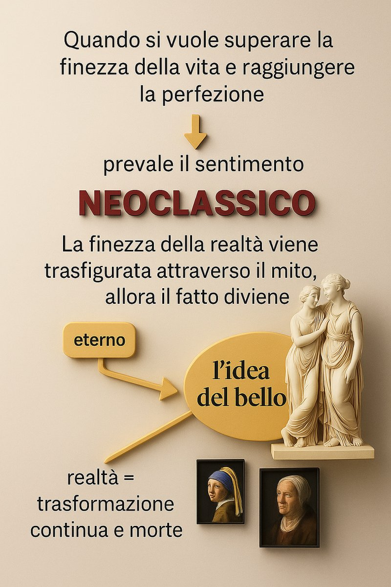
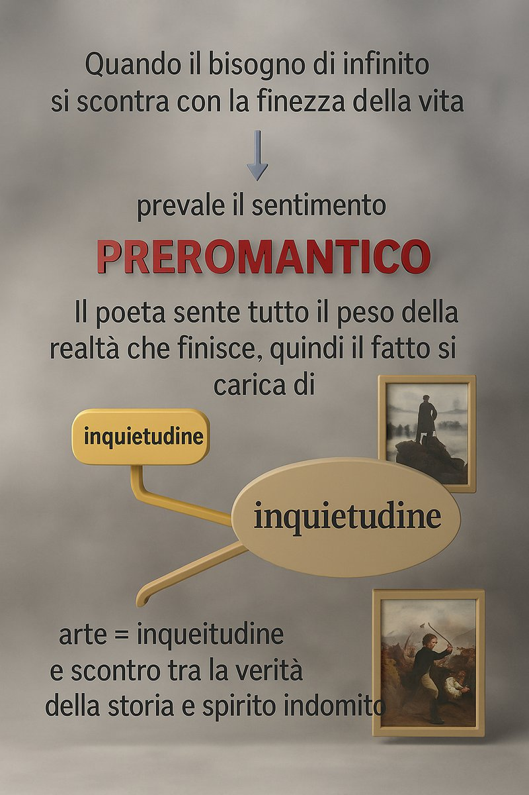

L'immagine del mondo
Foscolo vive a cavallo tra due visioni del mondo che l'Europa stava elaborando simultaneamente, e non sceglie tra le due: le abita entrambe, con piena consapevolezza della loro incompatibilità.
La prima è quella neoclassica. Il Neoclassicismo guarda all'antichità greco-romana come modello di perfezione: bellezza, misura, armonia, equilibrio formale. La natura non è minacciosa ma ordinata, l'arte non esprime il disordine interiore ma lo disciplina e lo trascende. I temi sono il mito, l'eroismo, la patria vista come valore etico. La forma è curata, chiusa, controllata: il sonetto, l'ode, l'endecasillabo. Per il Foscolo neoclassico, la bellezza è una risposta all'angoscia — non perché la cancelli, ma perché la contiene e le dà forma.
La seconda visione è quella preromantica. Qui la natura non è armonica ma tempestosa e selvaggia, specchio di un animo inquieto. I temi sono il dolore, la morte, l'esilio, l'amore impossibile, l'infinito irraggiungibile. La soggettività non viene disciplinata ma esibita, il conflitto interiore non viene risolto ma mostrato nella sua crudezza. L'influenza viene dall'Inghilterra (Young, Gray, Ossian) e dalla Germania (Goethe, con il Werther che Foscolo conosce bene). Per il Foscolo preromantico, l'arte non contiene il dolore: lo porta a temperatura massima.
Queste due visioni non convivono pacificamente in Foscolo: si combattono. È neoclassico nella forma e nell'aspirazione al bello eterno, preromantico nella sensibilità, nell'inquietudine esistenziale, nella passione. Questa «doppia tensione» non è un difetto della sua poetica né un'incongruenza biografica: è la condizione di chi vive autenticamente un'epoca di transizione, senza farsi rassicurare da nessuna delle due risposte disponibili.
Il mondo che Foscolo abita è quindi un mondo senza centro stabile: né la fede religiosa (rifiutata), né la ragione illuminista (insufficiente), né la passione romantica (destinata alla sconfitta) riescono a tenerlo in piedi da sole. La sua risposta non è la sintesi tra le due correnti — sarebbe troppo ordinata — ma la loro coesistenza tesa, produttiva, irrisolta.

Schema del Neoclassicismo

Schema del Preromanticismo